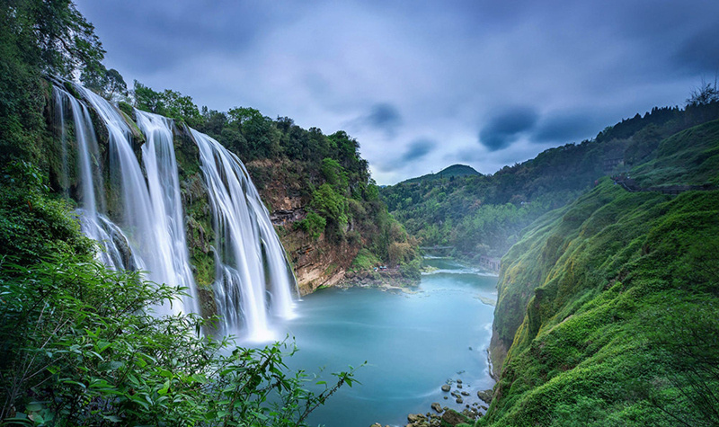

关于黄果树瀑布
黄果树瀑布，亚洲最大的瀑布，气势磅礴。景区内还有陡坡塘瀑布、天星桥等景点，各具特色。必看：黄果树大瀑布，水帘洞探秘。
Huangguoshu Waterfall, Asia's largest waterfall, truly majestic. The area also features Doupotang Waterfall and Tianxingqiao, each with unique charm. Must-sees: Huangguoshu Great Waterfall, explore the Water Curtain Cave.
Cascade de Huangguoshu, la plus grande d'Asie, vraiment majestueuse. La région comprend également la cascade de Doupotang et Tianxingqiao, chacun avec un charme unique. À voir absolument : Grande cascade de Huangguoshu, explorez la Grotte du Rideau d'Eau.



主要特色
- 黄果树大瀑布：气势恢宏，可多角度观赏。
- 水帘洞：位于大瀑布之后，可穿行体验。
- 天星桥景区：集山、水、林、洞为一体的自然奇观。
- 陡坡塘瀑布：《西游记》片尾取景地。
游玩小贴士
建议游玩时间4-5小时。旺季人多，请尽早入园。雨季水量更大，更为壮观，但需注意防滑和防水。